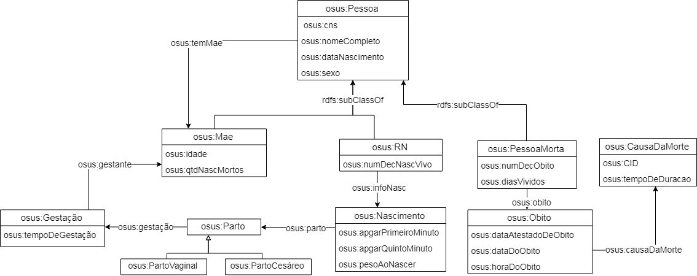

Integração Semântica
1. Bases Utilizadas
1.1 SIM
Sistema de Informações sobre Mortalidade
1.2 SINASC
Sistema de Informações sobre Nascidos Vivos
2. Ontologia de Dominio
Download ontologia em OWLRepresentação visual da ontologia de Dominio:
3.1 ESIM - Download Mapeamentos ESIM
Representação visual da Ontologia Local OSIM:

3.2 ESINASC - Download Mapeamentos ESINASC
Representação visual da Ontologia Local OSINASC:
4. Links Semânticos
Download Especificação SILKRepresentação visual dos links semânticos:

5. Fusão de Dados e Critérios de Qualidade